Garson uygulaması
Garson masayı telefonundan açar, siparişi girer, mutfağa gönderir. Ortak telefonda 4 haneli PIN; hazır olan tabak garsona haber verir.
Restoran, kafe, market ya da usta: müşterileriniz uygulama indirmeden kendi botunuzdan ya da QR kodunuzu okutup tarayıcıdan sipariş verir. Siparişi anında ekranınızda görür, hazırlar, kuryenize verirsiniz. Sipariş başına kesinti yok.
Üye işletme misiniz? 🔐 Panelinize buradan girin →
Görüntülerdeki işletme, kişi ve tutarlar örnektir.
Garson telefonu, kasa ve ön muhasebe artık YourPOS 360'ın içinde. Ayrı program, ayrı abonelik yok. Telefonda, tablette ve bilgisayarda aynı düzen: solda bölümler, ortada işiniz.
Masalarınızı salon, bahçe, teras diye bir kez tanımlayın. Garson kendi telefonundan ya da ortak garson telefonundan 4 haneli PIN'iyle girer; masayı açar, ürünleri seçer, mutfağa gönderir. Tabak hazır olunca garsonun telefonu haber verir.
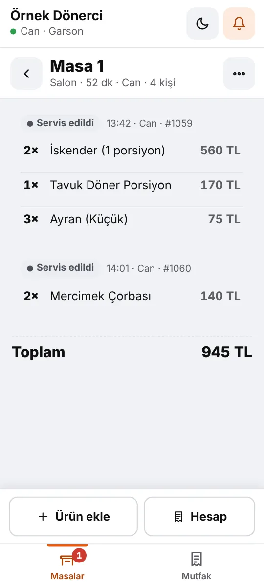
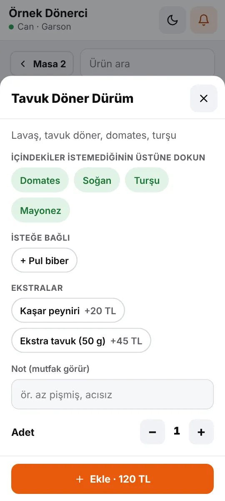
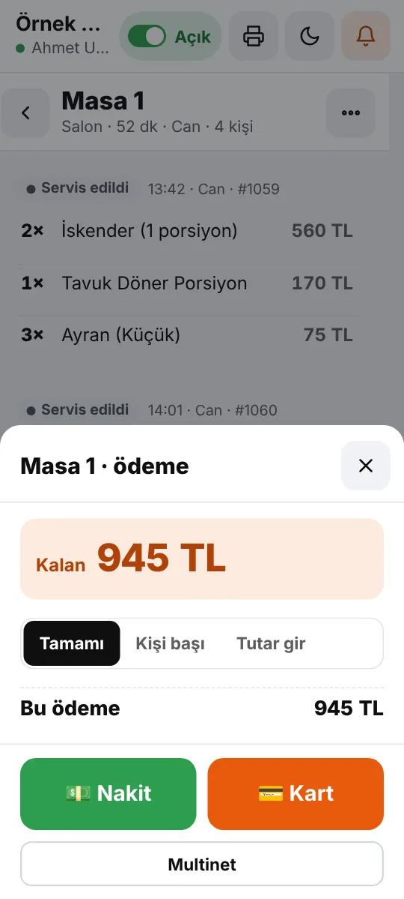
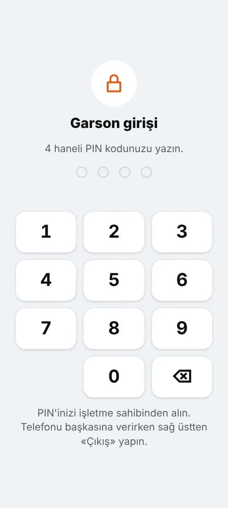
Kasa sekmesinde ürünlere dokunarak satış yapın: tabldotta tepsi hemen kapanır, tezgâh siparişinde müşteriye sıra numarası verilir ve sipariş mutfağa düşer. Salondaki TV ya da tabletteki numaratör ekranı «Hazırlanıyor» ve «Hazır» numaraları gösterir.
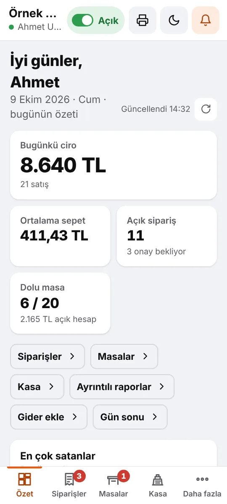
Satışlarınız zaten sistemde. Giderlerinizi, personel maaşlarını ve tedarikçi faturalarını da girin; YourPOS 360 aylık kâr-zararınızı, kasanızı ve borçlarınızı kendisi hesaplar.
Ön muhasebe işletmenin kendi takibi içindir; resmî defter, e-Fatura, SGK ve vergi bildirimleri muhasebecinizle yapılır.
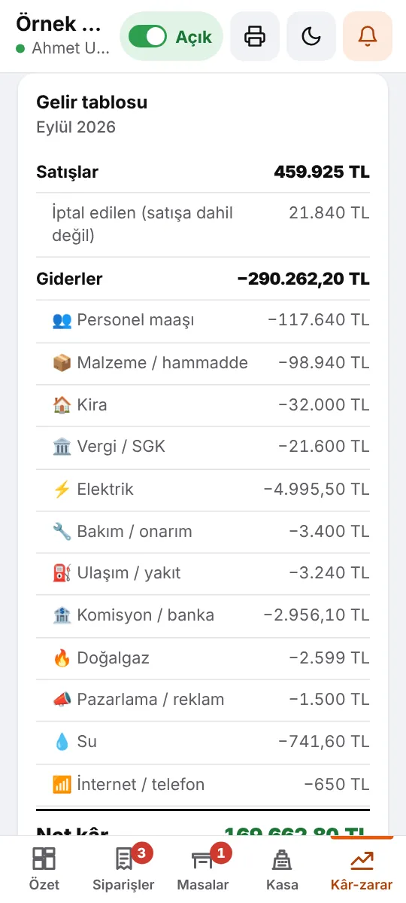
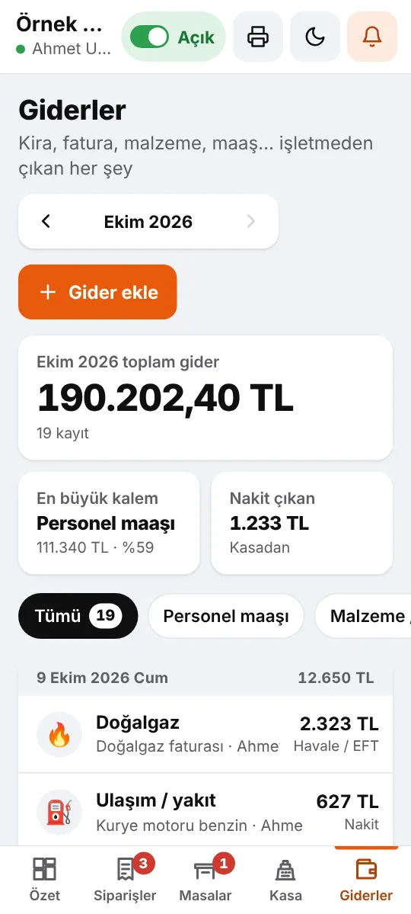
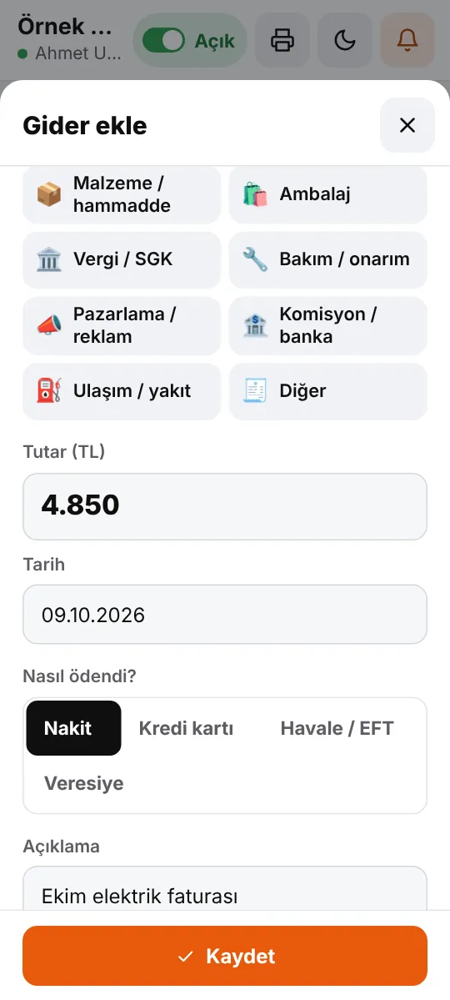
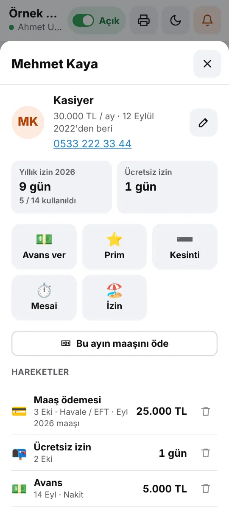
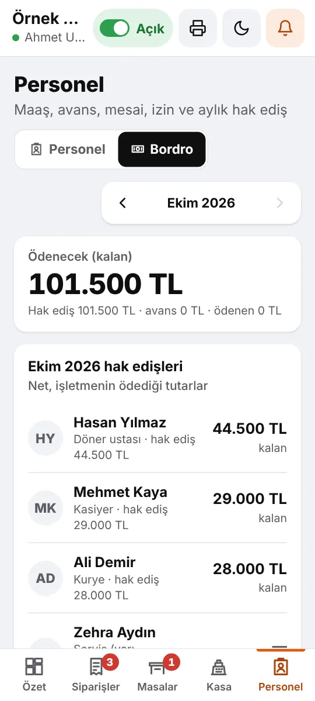
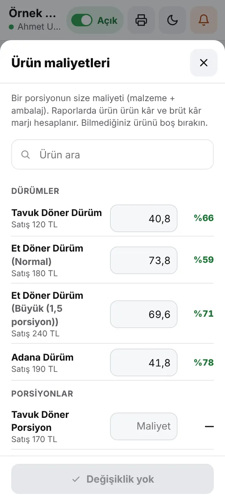
QR afişinizi okutan müşteri iki seçenek görür: Telegram'dan sipariş ver ya da tarayıcıdan sipariş ver. Telegram'ı olmayan müşteriniz de uygulama indirmeden, aynı menüden sipariş verir; durumunu sayfada canlı izler.

Telegram bir gün kapanır, bir ülkede yasaklanır ya da geçici olarak erişilemez olursa YourPOS 360 çalışmaya devam eder. Bütün verileriniz zaten bizim sunucumuzda; Telegram yalnızca kapı. Kapı kapanırsa ikinci kapı hazır.

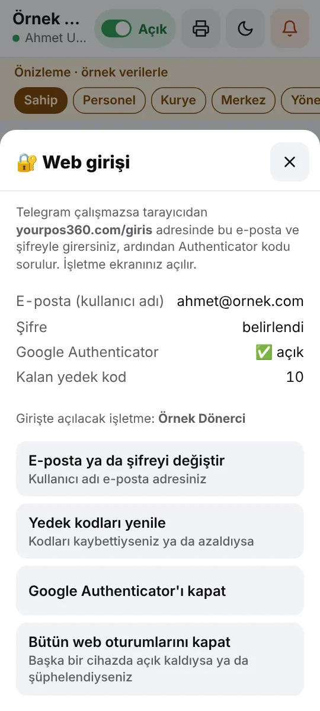
Menüden kuryeye, yazıcıdan rapora: işletmenizin bütün sipariş akışı tek yerde.
Garson masayı telefonundan açar, siparişi girer, mutfağa gönderir. Ortak telefonda 4 haneli PIN; hazır olan tabak garsona haber verir.
Masadaki QR'ı okutan müşteri menüden kendisi seçer; garson onaylayınca sipariş mutfağa gider, hesap masada birikir.
Tabldot ve tezgâh satışı; tezgâh siparişine sıra numarası, salondaki ekranda «Hazır» numaraları.
Giderler, gün sonu kasa sayımı ve aylık kâr-zarar. Satışlar zaten sistemde; net kârınızı her an görün.
Maaş, avans, prim, mesai, yıllık ve ücretsiz izin; aylık hak ediş tek ekranda. Bir çalışanınızı «müdür» yapın.
Alış faturası, ödeme ve iade ile kime ne borç var, vadesi geçen hangisi. Ürün maliyetiyle ürün ürün kâr.
Müşteri uygulama indirmez, üye olmaz. İşletmenizin botundan ya da QR kodunuzu okutup tarayıcıdan sipariş verir; ikisi de aynı menü, aynı sipariş ekranı.
Telegram kapanır ya da bir bölgede erişilemezse sistem durmaz: QR'lar ve bağlantılar web siparişine geçer, işletmeler panele e-posta ve şifreyle girer.
Siparişler sizin adınızı taşıyan botunuzdan gelir. Bağlantıyı Instagram'a, WhatsApp durumuna koyun; QR afişini kapıya asın.
Sipariş başına kesinti yok. Sabit aylık paket; müşteriniz ve kazancınız sizde kalır.
Porsiyon ve boy seçenekleri, çıkarılabilir malzemeler, ekstralar, menü (kombo) kurma, kategori ve fotoğraflar.
Şablonu indirin, ürünlerinizi ve fotoğraflarını yazın; panelden ya da bota yükleyin. «Üzerine yaz» mı «ek olarak ekle» mi, siz seçersiniz.
Konumunuza göre km bazlı bölgeler, teslimat ücreti, en az sipariş ve ücretsiz teslimat sınırı. Bölge dışına sipariş gelmez.
Yeni sipariş sesli uyarıyla düşer. Onayla, hazırla, kuryeye ver, teslim et: müşteri her adımı anında görür.
Yetişemediğiniz adımları kapatın; «Sevk et» ile siparişi tek dokunuşla yola çıkarın. Müşteriye yalnızca açık adımların mesajı gider.
Kurye siparişleri kendi ekranından alır; kim ne tahsil etti (nakit, kart, diğer) gün sonu kasada hazır.
Kurye isterse siparişi müşteriye gelen 4 haneli kodla kapatır; işletme ve YourPOS 360 «müşteri koduyla teslim» kaydını görür.
Müşteri isterse numarası kuryeye görünmez; kurye ona «Telegram'dan ara» ile ulaşır. Numara işletmeye her durumda gider.
Bluetooth, USB, bilgisayar ya da internete bağlı bulut yazıcı. Bulut yazıcıda telefon kapalıyken bile fiş çıkar.
Türkçe, English, Русский, Deutsch, العربية, Español. Sayfa müşterinin telefon dilinde açılır; not ve adres Türkçeye çevrilir.
Müşteriler işletmeyi ve ürünleri yıldızlar. Adil gösterim: en az 10 değerlendirme, son 6 ay. Öne çıkanlara «YourPOS 360'ın önerisi».
«2. ürün %50», «menüde içecek hediye» gibi kampanyalar; indirim sepette kendiliğinden düşer.
Ciro ve önceki döneme göre değişim, kategoriler, gün-saat yoğunluk haritası, ürün kârlılığı, garsonlar, ödemeler ve iptaller. Tek dokunuşla Excel.
Personel, kurye ve garson ekleyin; mutfak, kasa ya da garson telefonunu Telegram'sız bağlayın.
Tek bot, şube seçimi ve merkez ekranı. Bütün şubeleri tek yerden izleyin.
Tesisatçı, elektrikçi, usta: müşteri hizmeti seçer, gün ve saat belirler; durumlar «Usta yolda» olarak gider.
Müşteriler @yourpos360_bot'ta /yakin yazıp konumlarına en yakın işletmeleri bulur, tek dokunuşla sipariş verir.
E-posta ve şifreyle tarayıcıdan girin; Google Authenticator kodu ve 10 yedek kodla hesabınız güvende. Şifrenizi kimse göremez.
Sözleşmeler elektronik onaylı, PDF kopyaları size gelir. Müşteri verisi satılmaz, reklamda kullanılmaz.
Kurulumu Telegram'dan, telefonunuzdan yaparsınız. Takıldığınız her yerde «Bize yazın».
@yourpos360_bot'u açın, işletme bilgilerinizi ve paketinizi seçin, sözleşmeleri onaylayın.
Uygulamadan tek tek ya da Excel şablonuyla toplu; fotoğraflar, seçenekler ve menüler dahil.
BotFather'dan kendi botunuzu açın, anahtarı Panelim'e yapıştırın. Birkaç dakika sürer.
Bot linkinizi ve QR afişinizi paylaşın. Siparişler sesli uyarıyla ekranınıza düşer.
Restoran ekranı telefonda, tablette ya da bilgisayarda çalışır. Yeni, hazırlanıyor, hazır, yolda: her siparişin nerede olduğunu bir bakışta görürsünüz.


Müşteri «soğansız» der, ekstra kaşar ekler, menüsünde içeceğini seçer. Seçim tamamlanmadan ürün sepete girmez; mutfağa eksiksiz sipariş gelir.


Kurye hazır siparişleri «Al»ır ya da siz ona verirsiniz. Adres, telefon, kapıda alınacak tutar ve ödeme şekli kartında yazar. Teslim ederken «Direkt kapat» ya da «Kodla kapat»ı seçer; tahsilatı işaretler.


İnternete bağlı Star (CloudPRNT) ya da Epson (Server Direct Print) fiş yazıcısı, onaylanan siparişleri doğrudan sunucudan alır. iPhone kullanan işletmeler için ideal.


Günlük ciro ve önceki döneme göre değişim, kategoriler, gün ve saate göre yoğunluk haritası, en çok satanlar, ürün kârlılığı, garsonlar, ödeme yöntemleri ve iptaller. Kaç müşteriniz tekrar sipariş verdi, müşteri başına ortalama ne harcandı.

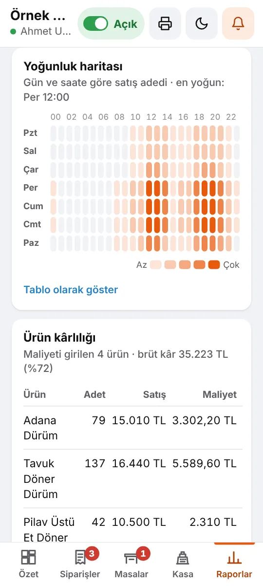
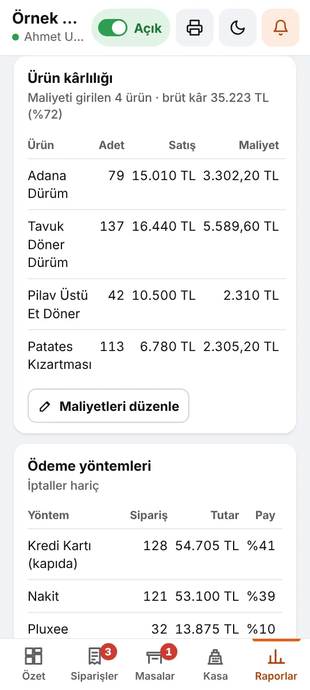

Botu başlatır ya da QR kodu okutur, «Sipariş ver»e dokunur. İlk siparişte konumunu ve telefonunu paylaşır; sonraki siparişlerde adresleri hatırlanır, «Aynısını sepete ekle» ile saniyeler sürer.


İşletmelerden gelen her öneri listemizde. Son eklenenler:
Garson masayı telefonundan açıyor, siparişi mutfağa gönderiyor; ortak telefonda PIN ile giriş. Hesap parçalı ödenebiliyor, masadaki QR'ı okutan müşteri kendisi sipariş verebiliyor.
Giderler, gün sonu kasa sayımı, maaş-avans-izin, tedarikçi borçları ve ürün maliyeti. Aylık net kâr her an hazır; bir çalışanınızı «müdür» yapabilirsiniz.
Kasa sekmesinden hızlı satış: tabldot hemen kapanır, tezgâh siparişine sıra numarası verilir; numaratör ekranı hazır numaraları gösterir.

Tarayıcıdan sipariş veren müşterinin bütün mesajları sipariş sayfasında toplanıyor; «sohbete yazın» gibi Telegram yönlendirmeleri yok. İptal düğmesi sayfada, kurye telefonla ulaşıyor.
QR kodunuzu okutan müşteri Telegram'dan ya da tarayıcıdan sipariş veriyor. Telegram kapanırsa sistem web'den çalışmaya devam ediyor; panele e-posta ve şifreyle girilebiliyor.
Kurye siparişi müşterinin söylediği 4 haneli kodla kapatabiliyor. Numarasını gizleyen müşteriye Telegram'dan arayarak ulaşıyor.

Menüyü panelden de Excel ile yükleyin; «üzerine yaz» ya da «ek olarak ekle». Yetişemediğiniz sipariş adımlarını kapatın, «Sevk et» ile tek dokunuşta yola çıkarın.
İnternete bağlı Star ve Epson yazıcılar siparişi doğrudan sunucudan alıyor. Telefon kapalı olsa da fiş çıkıyor.
Kaç yeni müşteri geldi, kaçı tekrar sipariş verdi, müşteri başına ortalama ne harcandı. İsim ve telefonlar gizlilik için kısaltılıyor.
Adım adım ekran görüntülü rehberler yayında. Müşteriler botu ilk açtığında rehber kendiliğinden geliyor.
Ortalama en az 10 değerlendirmeyle ve son 6 ayın puanlarından gösteriliyor. Öne çıkan işletmelere «YourPOS 360'ın önerisi» rozeti.
Yeni özellikler düzenli olarak ekleniyor; güncellemeler kendiliğinden gelir, bir şey kurmanız gerekmez. Bir özellik mi istiyorsunuz? Panelim → «Bize yazın» ile iletin; öneriler doğrudan geliştirme listemize giriyor.
Hayır. Telegram'ı olan müşteri işletmenizin botundan, olmayan tarayıcıdan sipariş verir; QR kodunuzu okutan müşteri iki seçeneği de görür. Üyelik ya da kart bilgisi istenmez.
Sistem çalışmaya devam eder. Bütün veriler YourPOS 360 sunucusunda durur; Telegram yalnızca giriş ve bildirim için kullanılır. «Telegram'sız mod» açılınca aynı QR kodlar doğrudan web siparişini açar, işletmeler paneline tarayıcıdan e-posta ve şifreyle girer. Afişleri yeniden bastırmanız gerekmez.
İşletme ekranınızı Telegram'dan açın, Ayarlar › «🔐 Web girişi» bölümünde e-posta adresinizi ve kendi şifrenizi belirleyin. Google Authenticator'ı da açmanızı öneririz; ekranda çıkan 10 yedek kodu saklayın. Sonra yourpos360.com/giris adresinden girersiniz. Şifrenizi kimse göremez.
Hayır. Garson ekranı aynı sistemin parçasıdır ve telefonun tarayıcısında ya da Telegram'da açılır. Garsonları Telegram'la davet edebilir ya da Telegram'sız, ortak bir garson telefonunda 4 haneli PIN'le girecek şekilde ekleyebilirsiniz.
Her masanın kendi QR kodu vardır; panelden A4'e yazdırırsınız. Müşteri okutunca menü o masa için açılır, seçtiği ürünler garsona «onay bekliyor» olarak düşer. Garson onaylayınca sipariş mutfağa gider ve masanın hesabına eklenir; müşteri hesabını telefonundan görür.
Hayır, tamamlar. Satışlarınızı, giderlerinizi, kasanızı, personel ödemelerinizi ve tedarikçi borçlarınızı takip edip aylık kâr-zararınızı gösterir. Resmî defter, e-Fatura / e-Arşiv, SGK ve vergi bildirimleri muhasebecinizle yapılır; dönemin Excel dosyasını ona gönderebilirsiniz.
Hayır. Maaş, avans, izin, gider ve tedarikçi kayıtlarını yalnız siz ve «müdür» yetkisi verdiğiniz kişi görür. Diğer personel, garson ve kuryeler bu bölümleri hiç görmez.
Yok. YourPOS 360 sabit aylık paketle çalışır; sipariş başına kesinti alınmaz. Ödemeyi müşteri kapıda doğrudan size yapar.
Paketler ürün sayısı, haftalık sipariş ve ekip sınırına göre değişir. Güncel ücretler @yourpos360_bot'taki üyelik ekranında gösterilir; ücretsiz deneme ile başlayabilirsiniz.
Telegram'ın resmî bot açma hesabı @BotFather'a /newbot yazarsınız, ad verirsiniz; size bir anahtar verir. Anahtarı Panelim'deki kutuya yapıştırınca botunuz bağlanır. İşletme rehberinde ekran görüntüleriyle anlatıyoruz.
Evet, bulut yazıcı ile. İnternete bağlı Star (CloudPRNT) ya da Epson (Server Direct Print) yazıcı, onaylanan siparişleri doğrudan sunucudan alır; telefonunuzun açık olması gerekmez.
Müşteri bilgileri işletmenize aittir, başka işletmelerle paylaşılmaz. YourPOS 360 yalnızca destek, sahte sipariş önleme ve istatistik için kayıt altında erişebilir; satmaz, reklamda kullanmaz.
Üyeliğiniz sona erdiğinde menü, sipariş ve müşteri kayıtlarınızın bir kopyasını 30 gün içinde bize yazarak isteyebilirsiniz. Bu kayıtlar 90 gün sonra yedekler dahil kalıcı olarak silinir; bu süre içinde geri dönmek isterseniz işletmeniz menüsü ve siparişleriyle geri yüklenebilir. Bakiye, ödeme ve sözleşme kayıtları yasal saklama süresince tutulur.
Evet. Market ve dükkânlar ürün satışı, tesisatçı ve ustalar randevulu hizmet için kullanır. Yakınımdaki işletmeler listesinde iş kolunuza göre bulunursunuz.
Zincir paketinde tek bot üzerinden şube seçimi yapılır; merkez ekranından bütün şubeleri izlersiniz.
Kurulum birkaç dakika sürer. Ücretsiz deneme süresiyle başlayın, siparişleriniz hemen gelmeye başlasın.
✈️Telegram'da arayın@yourpos360_bot